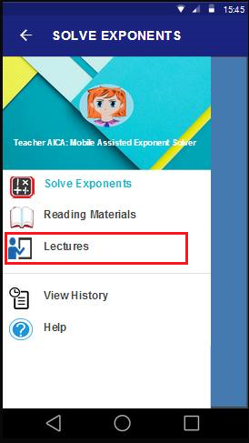
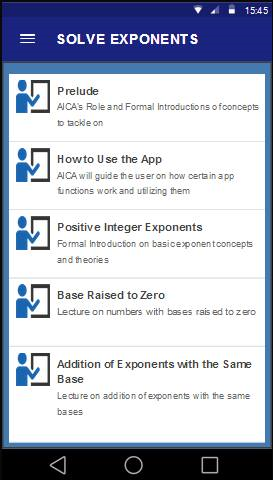
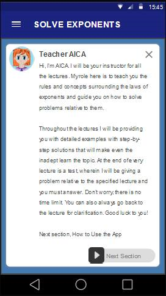
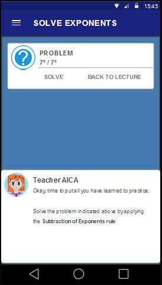

Like all classroom settings, Teacher AICA will take you to an environment
where you will be taught by a teacher, guided by a teacher, and tested by the teacher.
In this section, will guide you how to use the Lecture section.
You just follow the step to guid you.

after you tap the Navigation Menu,
tap "Lectures"

After you top the Lecutures, you will see this screen
that you can choose a Lecture topic you want to read. For example, you want to read a topic about "Prelude"
you just top it.

Now this is will you see. Teacher AICA will introduce herself to you and assist you how to you use this.

After you Read the Lecture, Teacher AICA will give you a quiz base on the lecture you choose.
For example in this Figure. You will answer this quiz base on the lecture of teacher AICA that you have learned.
After this, you can now go to the "Solve Exponents" because, you had Learned now how to solve the Exponents